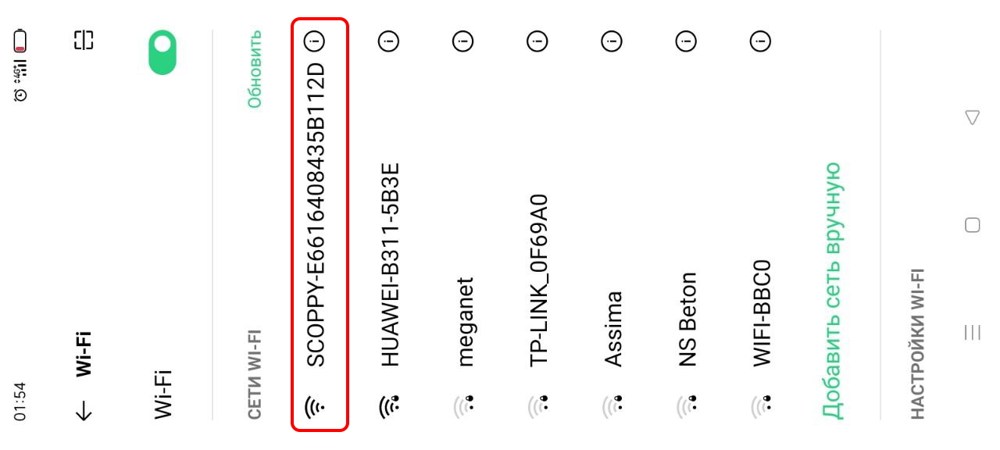
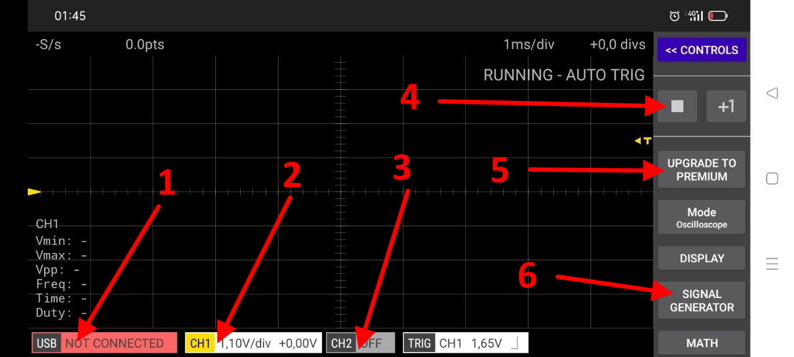
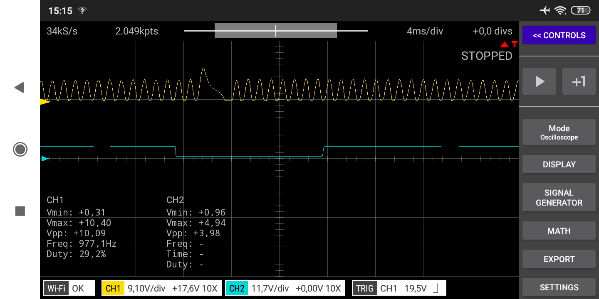
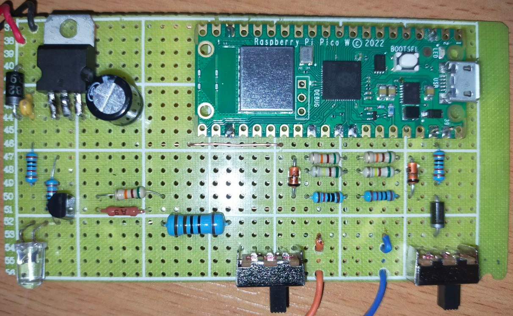

Приложение
Заходим в плеймаркет и устанавливаем бесплатное приложение.

Scoppy Oscilloscope хорошее приложение двухканального осциилографа работающее с платой Raspberry Pi Pico и Raspberry Pi Pico W (вай фай версия), разработка не моя но я немного доработал схему для удобной работы в автомобиле. Само приложение бесплатно при работе на один канал, то есть если вы просто установили то все функции как у обычной версии но отключен один канал, например работает генератор выдающий прямоугольные импульсы и пр. При покупке приложения за 3 доллара у вас навсегда остается этот осциллограф с возможностью обновления, привязанный к аккаунту(как я понял), в России данная покупка невозможна поэтому заходим в мой телеграмм канал там есть различные варианты решения этой проблемы.
Подключение
Подключаем приложение к осциллографу
После установки приложения включаем вайфай на телефоне и ищем точку scoppy (код для подключения не требуется), естественно плата Raspberry Pi Pico W должна быть подключена к питанию и в нее должна быть закинута прошивка (как это сделать смотрите в пошаговой сборке на этом сайте).
Интерфейс
Внешний вид осциллографа и управление
Опишу только те элементы которыми пользуюсь сам:
- Выбор способа подключения и индикатор что подключение успешное(или его нет).
- Настройки первого (бесплатного канала), можно подкорректировать напряжение, отключить и пр.
- Настройки второго канала, если программа бесплатная (как сейчас) то канал отключен.
- Кнопка старт стоп считывания сигнала.
- Кнопка перехода на платную версию со вторым каналом
- Включение генератора сигнала , есть предустановленые значения и можно ввести свои
Сигналы
Снимаем сигнал с двух каналов
На платной версии смотрим сигнал с двух каналов одновременно, в данный момент снятие сигнала остановлено можно расширять сигнал рассматривая как удобнее. Сигнал снят с авто Приора 16 клапанный мотор, 1 канал ДПКВ индуктивный датчик , 2 канал ДПРВ датчик холла с питанием 5 вольт, видна рассинхронизация на пол зуба если сравнить с эталоном на сайте "Ротки".
Осциллограф
Плата осциллографа с установленной Raspberry Pi Pico W
На фото собранный осциллограф с питанием от автомобильного акб, на два канала, с генератором выведенным на первый канал и подтяжкой 5 вольт для второго канала и индикатором питания. Можно собирать не все, а постепенно например только первый канал, затем питание от акб и пр, на сайте есть пошаговая сборка. Генератор пригодится для тестов осциллографа перед работой , так же можно проверять и калибровать спидометры эмулируя датчик скорости, запускать ШИМ вентиляторы на 50% мощности и пр. Подтяжка 5 вольт предназначена для просмотра минусовых сигналов встречающихся часто на авто.
Сайт принадлежит автору ютуб канала "Автоэлектрика онлайн", вопросы, предложения, донаты приветствуются!
Все контакты тут!